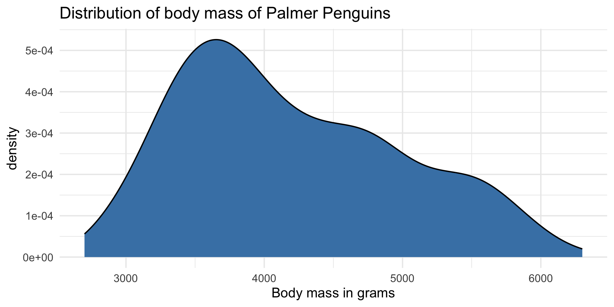
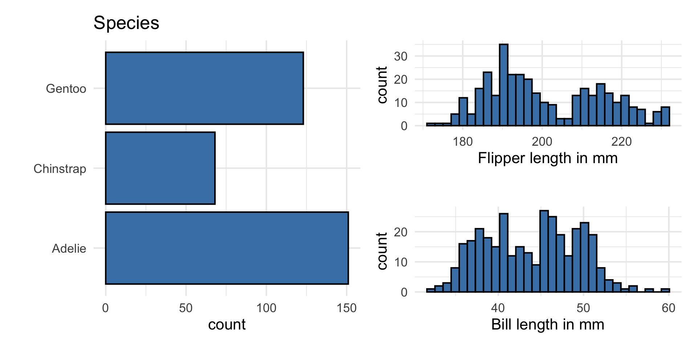
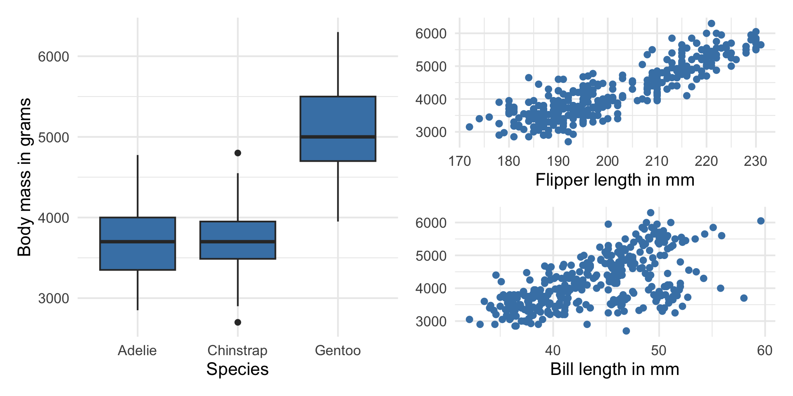
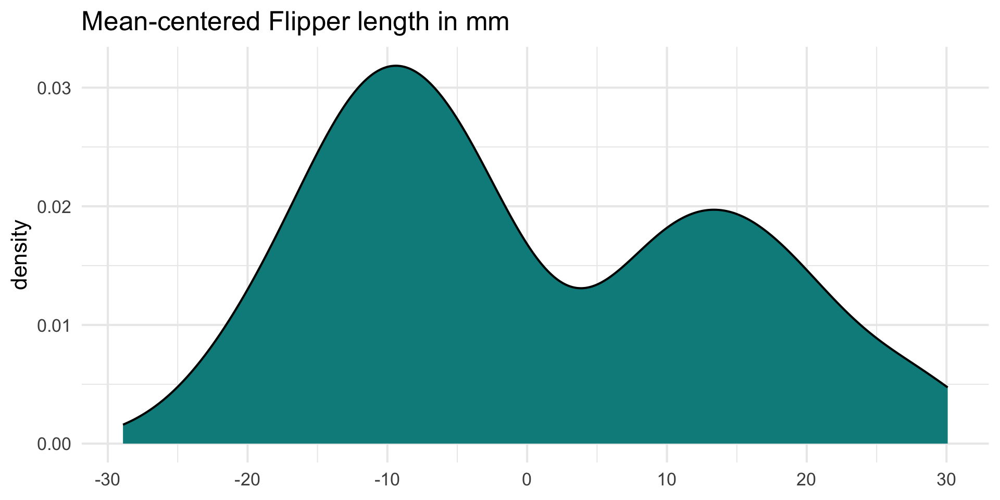
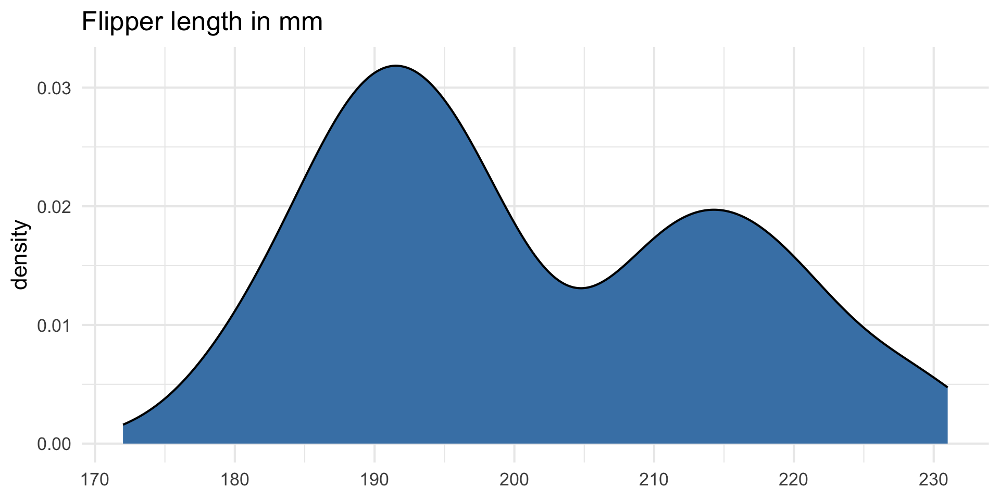
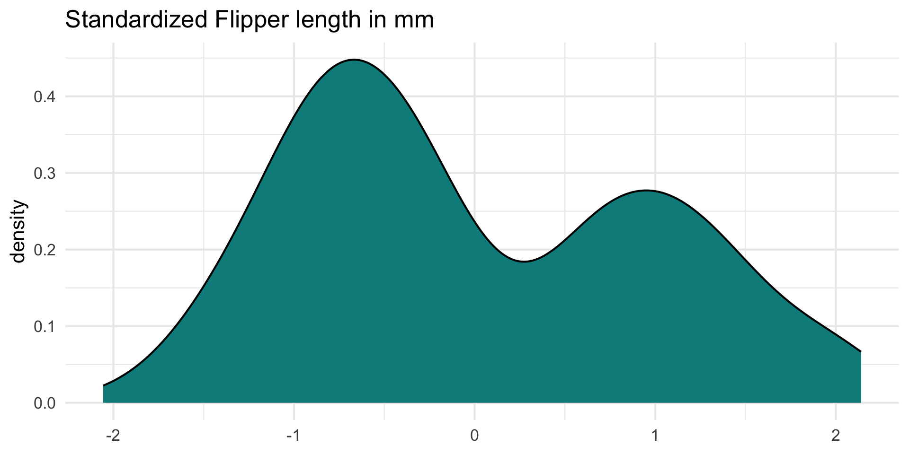
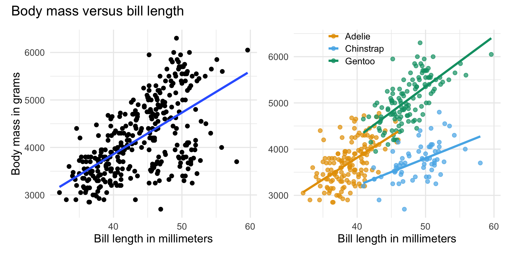

# load packages
library(tidyverse)
library(tidymodels)
library(openintro)
library(patchwork)
library(knitr)
library(kableExtra)
library(colorblindr)
library(palmerpenguins)
# set default theme and larger font size for ggplot2
ggplot2::theme_set(ggplot2::theme_minimal(base_size = 16))Multiple linear regression
Types of predictors
Announcements
- Lab 02 due Thursday, February 5 at 11:59pm
- HW 02 due Tuesday, February 10 at 11:59pm
- Released after class today
- Regrade requests
- Statistics experience due April 21
- SSMU Mini DataFest - February 8
- See Ed Discussion for announcement
Computational setup
Topics
Include indicator variables for categorical predictors in the regression model
Mean-center and standardize quantitative predictors
Use interaction terms in the model to capture differences in a predictor’s effect
Data: Palmer penguins
The penguins data set contains data for penguins found on three islands in the Palmer Archipelago, Antarctica. Data were collected and made available by Dr. Kristen Gorman and the Palmer Station, Antarctica LTER, a member of the Long Term Ecological Research Network. These data can be found in the palmerpenguins R package.
. . .
# A tibble: 342 × 4
body_mass_g flipper_length_mm bill_length_mm species
<int> <int> <dbl> <fct>
1 3750 181 39.1 Adelie
2 3800 186 39.5 Adelie
3 3250 195 40.3 Adelie
4 3450 193 36.7 Adelie
5 3650 190 39.3 Adelie
6 3625 181 38.9 Adelie
7 4675 195 39.2 Adelie
8 3475 193 34.1 Adelie
9 4250 190 42 Adelie
10 3300 186 37.8 Adelie
# ℹ 332 more rowsVariables
Predictors:
bill_length_mm: Bill length in millimetersflipper_length_mm: Flipper length in millimetersspecies: Adelie, Gentoo, or Chinstrap species
Response: body_mass_g: Body mass in grams
The goal of this analysis is to use the bill length, flipper length, and species to predict body mass.
Response: body_mass_g

| min | median | max | iqr |
|---|---|---|---|
| 2700 | 4050 | 6300 | 1200 |
Predictors

Response vs. predictors

Multiple linear regression model
penguin_fit <- lm(body_mass_g ~ flipper_length_mm + species +
bill_length_mm, data = penguins)
tidy(penguin_fit) |>
kable(digits = 3)| term | estimate | std.error | statistic | p.value |
|---|---|---|---|---|
| (Intercept) | -3904.387 | 529.257 | -7.377 | 0.000 |
| flipper_length_mm | 27.429 | 3.176 | 8.638 | 0.000 |
| speciesChinstrap | -748.562 | 81.534 | -9.181 | 0.000 |
| speciesGentoo | 90.435 | 88.647 | 1.020 | 0.308 |
| bill_length_mm | 61.736 | 7.126 | 8.664 | 0.000 |
Model equation
\[ \begin{align}\widehat{\text{body_mass_g}} = -3904.387 &+27.429 \times \text{flipper_length_mm}\\ & -748.562 \times \text{Chinstrap}\\ &+ 90.435 \times \text{Gentoo}\\ &+ 61.736 \times \text{bill_length_mm} \end{align} \]
Note
We will talk about why there are two terms in the model for species shortly!
Interpreting \(\hat{\beta}_j\)
- The estimated coefficient \(\hat{\beta}_j\) is the expected change in the mean of \(Y\) when \(X_j\) increases by one unit, holding the values of all other predictor variables constant.
- Example: The estimated coefficient for
flipper_length_mmis 27.429. This means for each additional millimeter in a penguin’s flipper length, its body mass is expected to be greater by 27.429 grams, on average, holding species and bill length constant.
Prediction
What is the predicted body mass for a Gentoo penguin with a flipper length of 200 millimeters and bill length of 45 millimeters?
new_penguin <- tibble(
flipper_length_mm = 200,
species = "Gentoo",
bill_length_mm = 45
)
predict(penguin_fit, new_penguin) 1
4449.955 Intervals for prediction
90% confidence interval for estimated mean body mass of Gentoo penguins with flipper length of 200 mm and bill length of 45 mm.
predict(penguin_fit, new_penguin, interval = "confidence",
level = 0.90) |> kable(digits = 3)| fit | lwr | upr |
|---|---|---|
| 4449.955 | 4355.238 | 4544.671 |
90% prediction interval for estimated body mass of an individual Gentoo penguin with flipper length of 200 mm and bill length of 45 mm.
predict(penguin_fit, new_penguin, interval = "prediction",
level = 0.90) |> kable(digits = 3)| fit | lwr | upr |
|---|---|---|
| 4449.955 | 3881.035 | 5018.875 |
Categorical predictors
Indicator variables
Suppose there is a categorical variable with \(k\) categories (levels)
We can make \(k\) indicator variables - one indicator for each category
An indicator variable (also called dummy variables) takes values 1 or 0
- 1 if the observation belongs to that category
- 0 if the observation does not belong to that category
Indicator variables for species
penguins <- penguins |>
mutate(
adelie = if_else(species == "Adelie", 1, 0),
chinstrap = if_else(species == "Chinstrap", 1, 0),
gentoo = if_else(species == "Gentoo", 1, 0)
). . .
# A tibble: 3 × 4
species adelie chinstrap gentoo
<fct> <dbl> <dbl> <dbl>
1 Adelie 1 0 0
2 Gentoo 0 0 1
3 Chinstrap 0 1 0Indicators in the model
- We will use \(k-1\) of the indicator variables in the model.
- The baseline is the category that doesn’t have a term in the model. This is also called the reference level.
- The coefficients of the indicator variables in the model are interpreted as the expected change in the response compared to the baseline, holding all other variables constant.
. . .
penguins |>
select(species, chinstrap, gentoo) |>
slice(1, 152, 283) # select example observations# A tibble: 3 × 3
species chinstrap gentoo
<fct> <dbl> <dbl>
1 Adelie 0 0
2 Gentoo 0 1
3 Chinstrap 1 0Using all \(k\) indicators in R model
Run the code below to fit a model using flipper_length_mm, bill_length_mm, and all the indicator variables for species to predict body_mass_g. What do you notice about the model output? Why did this happen?
Interpreting species
| term | estimate | std.error | statistic | p.value | conf.low | conf.high |
|---|---|---|---|---|---|---|
| (Intercept) | -3904.387 | 529.257 | -7.377 | 0.000 | -4945.450 | -2863.324 |
| flipper_length_mm | 27.429 | 3.176 | 8.638 | 0.000 | 21.182 | 33.675 |
| speciesChinstrap | -748.562 | 81.534 | -9.181 | 0.000 | -908.943 | -588.182 |
| speciesGentoo | 90.435 | 88.647 | 1.020 | 0.308 | -83.937 | 264.807 |
| bill_length_mm | 61.736 | 7.126 | 8.664 | 0.000 | 47.720 | 75.753 |
. . .
- The baseline category is
Adelie. - Penguins from the Chinstrap species are expected to have a body mass that is 748.562 grams less, on average, compared to penguins from the Adelie species, holding flipper length and bill length constant.
. . .
Interpret the coefficient of Gentoo in the context of the data.
Transforming quantitative predictors
Centering
- Centering a quantitative predictor means shifting every value by some constant \(C\)
\[ X_{cent} = X - C \]
One common type of centering is mean-centering, in which every value of a predictor is shifted by its mean
Only quantitative predictors are centered
Center all quantitative predictors in the model for ease of interpretation, when using mean-centering
What is one reason we might want to center the quantitative predictors? What are the units of centered variables?
Centering
Use the scale() function with center = TRUE and scale = FALSE to mean-center variables
penguins <- penguins |>
mutate(flipper_length_cent = scale(flipper_length_mm, center = TRUE, scale = FALSE),
bill_length_cent = scale(bill_length_mm, center = TRUE, scale = FALSE))Original vs. mean-centered variable
Original variable

| Mean | SD |
|---|---|
| 200.915 | 14.062 |
Mean-centered variable

| Mean | SD |
|---|---|
| 0 | 14.062 |
. . .
Using mean-centered variables in the model
How do you expect the model to change if we use flipper_length_cent and bill_length_cent in the model?
. . .
| term | estimate | std.error | statistic | p.value | conf.low | conf.high |
|---|---|---|---|---|---|---|
| (Intercept) | 4318.066 | 45.674 | 94.542 | 0.000 | 4228.225 | 4407.908 |
| flipper_length_cent | 27.429 | 3.176 | 8.638 | 0.000 | 21.182 | 33.675 |
| speciesChinstrap | -748.562 | 81.534 | -9.181 | 0.000 | -908.943 | -588.182 |
| speciesGentoo | 90.435 | 88.647 | 1.020 | 0.308 | -83.937 | 264.807 |
| bill_length_cent | 61.736 | 7.126 | 8.664 | 0.000 | 47.720 | 75.753 |
Original vs. mean-centered model
| term | estimate |
|---|---|
| (Intercept) | -3904.387 |
| flipper_length_mm | 27.429 |
| speciesChinstrap | -748.562 |
| speciesGentoo | 90.435 |
| bill_length_mm | 61.736 |
| term | estimate |
|---|---|
| (Intercept) | 4318.066 |
| flipper_length_cent | 27.429 |
| speciesChinstrap | -748.562 |
| speciesGentoo | 90.435 |
| bill_length_cent | 61.736 |
What changed? What is the same?
Interpret coefficient of mean-centered predictors
Interpret the coefficient of bill_length_cent in the context of the data.
Standardizing
- Standardizing a quantitative predictor mean shifting every value by the mean and dividing by the standard deviation of that variable
\[ X_{std} = \frac{X - \bar{X}}{s_X} \]
Only quantitative predictors are standardized
Standardize all quantitative predictors in the model for ease of interpretation
What is one reason we might want to standardize the quantitative predictors? What are the units of standardized variables?
Standardizing
Use the scale() function with center = TRUE and scale = TRUE to standardized variables
penguins <- penguins |>
mutate(flipper_length_std = scale(flipper_length_mm, center = TRUE, scale = TRUE),
bill_length_std = scale(bill_length_mm, center = TRUE, scale = TRUE))Original vs. standardized variable
Original variable

| Mean | SD |
|---|---|
| 200.915 | 14.062 |
Standardized variable

| Mean | SD |
|---|---|
| 0 | 1 |
. . .
Using standardized variables in the model
How do you expect the model to change if we use flipper_length_std and bill_length_std in the model?
. . .
| term | estimate | std.error | statistic | p.value | conf.low | conf.high |
|---|---|---|---|---|---|---|
| (Intercept) | 4318.066 | 45.674 | 94.542 | 0.000 | 4228.225 | 4407.908 |
| flipper_length_std | 385.696 | 44.654 | 8.638 | 0.000 | 297.862 | 473.531 |
| speciesChinstrap | -748.562 | 81.534 | -9.181 | 0.000 | -908.943 | -588.182 |
| speciesGentoo | 90.435 | 88.647 | 1.020 | 0.308 | -83.937 | 264.807 |
| bill_length_std | 337.055 | 38.902 | 8.664 | 0.000 | 260.533 | 413.577 |
Original vs. standardized model
| term | estimate |
|---|---|
| (Intercept) | -3904.387 |
| flipper_length_mm | 27.429 |
| speciesChinstrap | -748.562 |
| speciesGentoo | 90.435 |
| bill_length_mm | 61.736 |
| term | estimate |
|---|---|
| (Intercept) | 4318.066 |
| flipper_length_std | 385.696 |
| speciesChinstrap | -748.562 |
| speciesGentoo | 90.435 |
| bill_length_std | 337.055 |
What changed? What is the same?
Interaction terms
Interaction terms
- Sometimes the relationship between a predictor variable and the response depends on the value of another predictor variable.
- This is an interaction effect.
- To account for this, we can include interaction terms in the model.
Bill length versus species
If the lines are not parallel, there is indication of a potential interaction effect, i.e., the slope of bill length may differ based on the species.

Interaction terms in R
Fit the model predicting body_mass_g using flipper_length_mm, bill_length_mm, speices, and the interaction between species and bill_length_mm.
Write the estimated regression equation for
Adeliepenguins.Write the estimated regression equation for
Chinstrappenguins.
Interaction term in model
penguin_int_fit <- lm(body_mass_g ~ flipper_length_mm + species + bill_length_mm + species * bill_length_mm,
data = penguins)| term | estimate | std.error | statistic | p.value |
|---|---|---|---|---|
| (Intercept) | -4297.905 | 645.054 | -6.663 | 0.000 |
| flipper_length_mm | 27.263 | 3.175 | 8.586 | 0.000 |
| speciesChinstrap | 1146.287 | 726.217 | 1.578 | 0.115 |
| speciesGentoo | 54.716 | 619.934 | 0.088 | 0.930 |
| bill_length_mm | 72.692 | 10.642 | 6.831 | 0.000 |
| speciesChinstrap:bill_length_mm | -41.035 | 16.104 | -2.548 | 0.011 |
| speciesGentoo:bill_length_mm | -1.163 | 14.436 | -0.081 | 0.936 |
Interpreting interaction terms
- What the interaction means: The effect of bill length on the body mass is 41.035 less when the penguin is from the Chinstrap species compared to the effect for the Adelie species, holding all else constant.
- Interpreting
bill_length_mmfor Chinstrap: For each additional millimeter in bill length, we expect the body mass of Chinstrap penguins to increase by 31.657 grams (72.692 - 41.035), holding flipper length constant.
Summary
In general, how do
indicators for categorical predictors impact the model equation?
interaction terms impact the model equation?
Recap
Included indicator variables for categorical predictors in the regression model
Mean-centered and standardized quantitative predictors
Used interaction terms in the model to capture differences in a predictor’s effect
Next class
Inference for multiple linear regression
Complete Lecture 09 prepare